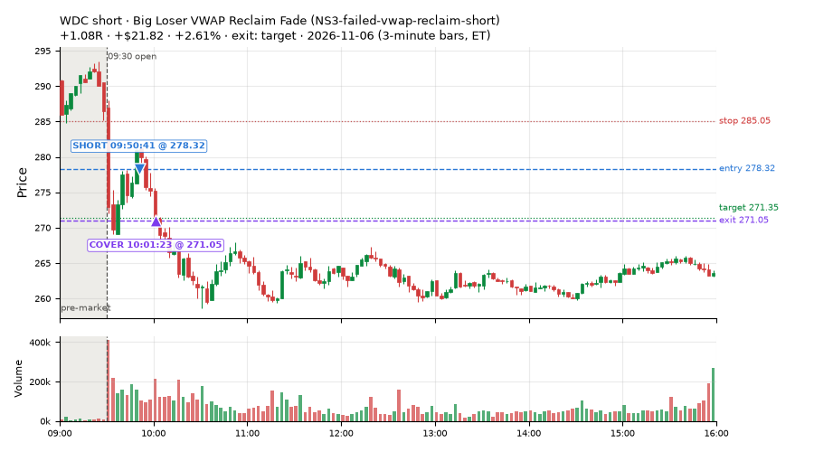
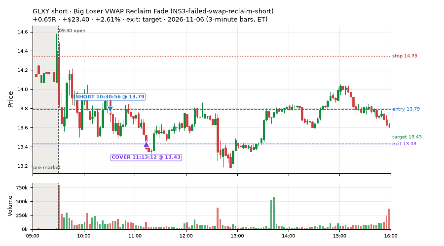
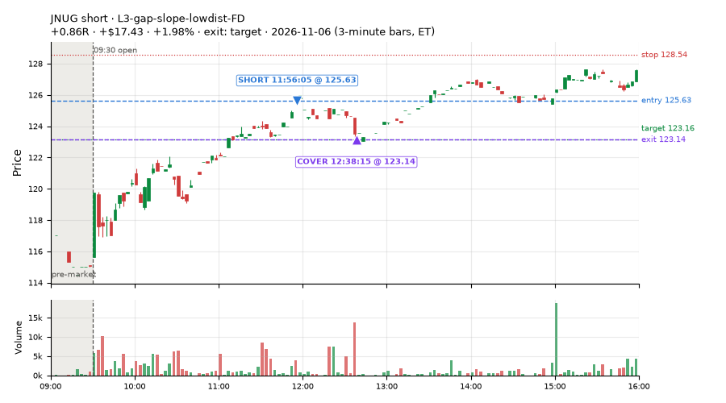
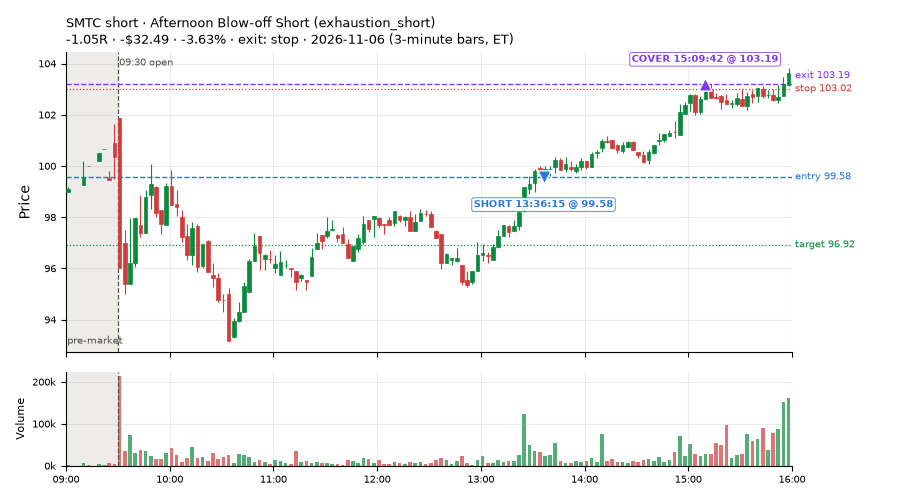
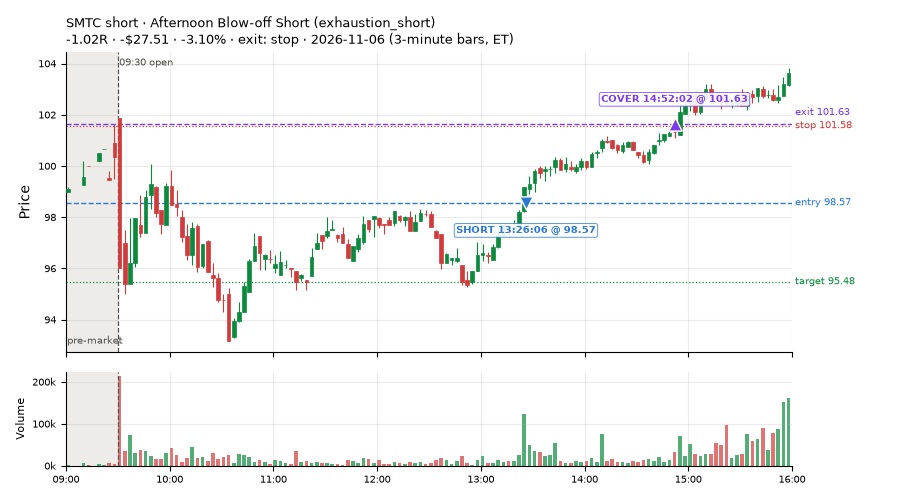
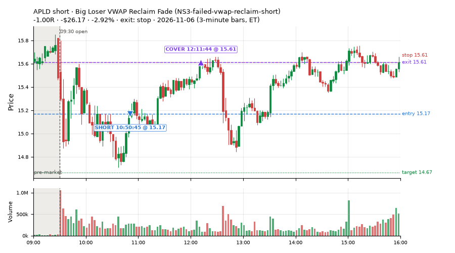
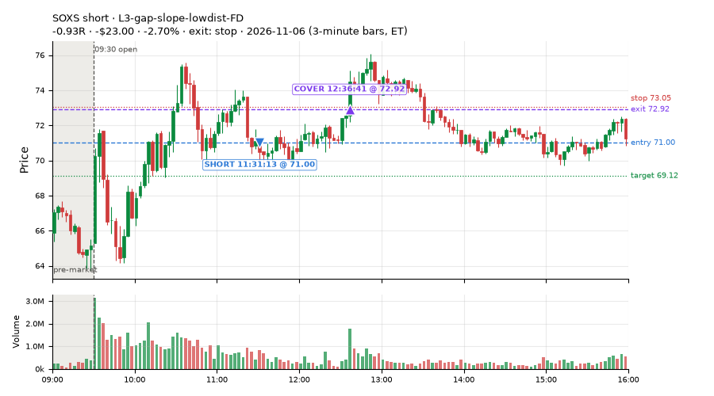
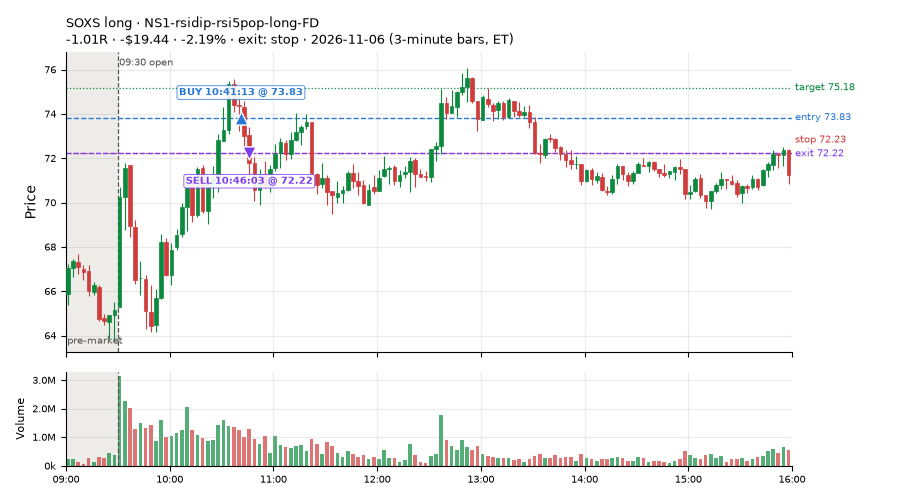

92 trades · win rate 61% · P/L $16.36
PROBATION: no live setup has passed both locked test periods. 10 owner-directed setups added 2026-10-08 (MarcoFlow top 5 + 5 new), untested live. RW6G1 (RW6 + VWAP band guard) added 2026-10-09, probation.

| Symbol | Setup | Side | In | Out | Entry | Exit | Exit reason | % gained | P/L |
|---|---|---|---|---|---|---|---|---|---|
| WDC | Big Loser VWAP Reclaim Fade (NS3-failed-vwap-reclaim-short) | short | 09:50 | 10:01 | 278.32 | 271.05 | target | +2.61% | $21.82 |
| GLXY | Big Loser VWAP Reclaim Fade (NS3-failed-vwap-reclaim-short) | short | 10:30 | 11:13 | 13.79 | 13.43 | target | +2.61% | $23.40 |
| JNUG | L3-gap-slope-lowdist-FD | short | 11:56 | 12:38 | 125.63 | 123.14 | target | +1.98% | $17.43 |
| Symbol | Setup | Side | In | Out | Entry | Exit | Exit reason | % lost | P/L |
|---|---|---|---|---|---|---|---|---|---|
| SMTC | exhaustion_short | short | 13:36 | 15:09 | 99.58 | 103.19 | stop | -3.63% | $-32.49 |
| SMTC | exhaustion_short | short | 13:26 | 14:52 | 98.57 | 101.63 | stop | -3.10% | $-27.51 |
| APLD | NS3-failed-vwap-reclaim-short | short | 10:50 | 12:11 | 15.17 | 15.61 | stop | -2.92% | $-26.17 |
| SOXS | L3-gap-slope-lowdist-FD | short | 11:31 | 12:36 | 71.00 | 72.92 | stop | -2.70% | $-23.00 |
| SOXS | NS1-rsidip-rsi5pop-long-FD | long | 10:41 | 10:46 | 73.83 | 72.22 | stop | -2.19% | $-19.44 |








Signal to fill: median 2s, 90th percentile 4s (92 trades). Bars close each minute; the order follows the bar close.
Best excursion (MFE): median 0.48R; worst (MAE) median 0.52R. 26% of trades never got +0.25R in our favour; 0 reached +1R and still closed at or below 0.
| Symbol | Setup | Best R | Worst R | Closed R |
|---|---|---|---|---|
| AWK | L3-gap-slope-lowdist-FD | +0.65 | -1.08 | -1.05 |
| SOXS | L3-gap-slope-lowdist-FD | +0.74 | -1.30 | -0.93 |
| A | RW7-gapdn-bounce-early-short-FD | +0.56 | -1.02 | -1.05 |
| NUGT | L3-gap-slope-lowdist-FD | +0.51 | -1.00 | -1.03 |
| KEYS | NS3-failed-vwap-reclaim-short | +0.47 | -1.02 | -1.02 |
| Entry time | Trades | Win | Avg R | P/L |
|---|---|---|---|---|
| 09:50-10:30 | 3 | 100% | +0.74 | $38.44 |
| 10:30-11:30 | 35 | 51% | -0.08 | $-47.72 |
| 11:30-13:00 | 13 | 69% | +0.26 | $18.86 |
| 13:00-14:00 | 18 | 56% | -0.04 | $-45.64 |
| 14:00-16:00 | 23 | 70% | +0.09 | $52.42 |
| Setup | Trades | Win | Avg R | Adj R (net of SPY) | Avg R ex-market (all sessions) | P/L |
|---|---|---|---|---|---|---|
| Panic Flush Reversal (3x volume) (CWT05-flush-m05-v3-long) | 1.0 | 100% | +0.76 | +0.57 | -0.08 (beta +1.75, n 49) | $9.52 |
| L3-gap-slope-lowdist-FD | 7.0 | 57% | +0.14 | -0.17 | -0.11 (beta -1.73, n 72) | $-3.77 |
| Sellers into Strength (all day) (MF5-flowsell-vwapup-rsi5hi) owner-directed; holdouts once: Sep-Oct -0.001R n264, Apr-Jun -0.010R n1199 | 2.0 | 100% | +0.60 | +0.20 | -0.21 (beta -1.95, n 42) | $9.16 |
| NS1-rsidip-rsi5pop-long-FD | 10.0 | 50% | -0.10 | -0.05 | -0.08 (beta +1.18, n 60) | $-17.99 |
| Big Loser VWAP Reclaim Fade (NS3-failed-vwap-reclaim-short) owner-directed; holdouts once: Sep-Oct +0.119R n65, Apr-Jun -0.136R n524 | 8.0 | 50% | -0.01 | -0.13 | -0.20 (beta -0.69, n 58) | $6.01 |
| NS4-pm-vwap-reclaim-oversold-short-FD | 2.0 | 50% | -0.20 | -0.31 | -0.18 (beta -5.41, n 29) | $-0.88 |
| Gap-Down Early Bounce Short (all day) (RW7-gapdn-bounce-early-short-FD) | 39.0 | 72% | +0.18 | -0.18 | -0.13 (beta -1.34, n 436) | $54.17 |
| Afternoon Blow-off Short (exhaustion_short) failed Apr-Jun holdout: -0.020R/trade over 622 trades | 17.0 | 59% | -0.04 | -0.20 | -0.02 (beta -0.35, n 79) | $-18.01 |
| exhaustion_short-FD | 3.0 | 33% | -0.41 | -0.62 | -0.29 (beta -1.50, n 85) | $-13.79 |
| Index Last-Half-Hour Momentum (intraday_momentum) failed Apr-Jun holdout: -0.091R/trade over 147 trades | 3.0 | 0% | -0.83 | +0.00 | -0.33 (beta +0.17, n 45) | $-8.06 |
Market direction (SPY, beta 1) accounted for $178.19 of today's $16.36; the rest ($-161.83) came from the setups themselves. Avg R net of SPY: -0.16 (incl. a hedge leg's cost; report only).
13 setups live today. Today: 212 signals, 92 taken, 6 lost because another setup held the symbol (3%). Since 2026-10-09 (21 sessions): 8899 signals, 3654 taken, 754 lost to other setups (8%). Peak open positions today 50 of 400 slots. Earnings blackout removed 1531 symbols before scanning.
Simulated playing time (not live): 4913 what-if trades of signals not taken, avg -0.12R, 49% winners; of them 601 lost to another setup (avg +0.02R).
Silent: IDX1-qqq100-0955-TQQQ-trail, IDX1-qqq100-0955-TQQQ-hold, IDX2-spy075-0945-3x-trail, IDX3-spy075-0955-3x-trail, IDX5-spy050-0945-3x-trail · Crowded out: MF3-open-flowsell-rsi5hi, RW4-ns3-adv150-short-FD, RW4-ns3-adv150-short, MF4-h40-open-flowsell-FD, NS3-failed-vwap-reclaim-short-FD · Starved: MF1-945-flowsell-vwapup, MF5-flowsell-vwapup-rsi5hi, exhaustion_short-FD, orb20_a, RW6G1-ns2-up3-vwap2sd-short, LIQ-pdl-sweep-open15-vwap-long, ST5-pdbrkup-short-mid-t05s1-FD, ST3-rsi5up-short-pm-t1s1-FD, NS2-sma50break-overbought-short, MF1-945-flowsell-vwapup-FD
| Prio | Setup | Today sig / taken | Sessions | Signals / taken / trades | Taken/day | Expected/day | Lost to other setups | Lost to (setup n) | Top skip reasons | SIMULATED: not-taken n / avg R / win | Verdict |
|---|---|---|---|---|---|---|---|---|---|---|---|
| 1 | Early Sellers Above VWAP MF1-945-flowsell-vwapup | 2 / 0 | 11 | 34 / 5 / 5 | 0.45 | 5.33 | 0 | – | spread / quote / size 12, other 10, split-tape short gate 6 | 29 / +0.14R / 34% | starved 0.45 entries/day vs ~5.33 expected |
| 2 | NS4-pm-vwap-reclaim-oversold-short-FD NS4-pm-vwap-reclaim-oversold-short-FD | 6 / 2 | 20 | 70 / 29 / 29 | 1.45 | 3.57 | 4 | L3-gap-slope-fromopen-FD 3, NS1-rsidip-rsi5pop-long-FD 1 | not shortable / shorts off 13, spread / quote / size 12, split-tape short gate 8 | 41 / +0.01R / 44% | slow 7.2 entries/week; ~8 weeks to 60 trades |
| 3 | Panic Flush Reversal (3x volume) CWT05-flush-m05-v3-long | 1 / 1 | 13 | 82 / 49 / 49 | 3.77 | – | 0 | – | spread / quote / size 19, other 13, daily loss cap 1 | 33 / -0.80R / 55% | ok 18.8 entries/week |
| 4 | L3-gap-slope-lowdist-FD L3-gap-slope-lowdist-FD | 35 / 7 | 20 | 345 / 72 / 72 | 3.60 | 9.76 | 8 | RW6-ns2-up3-short-FD 3, NS2-sma50break-overbought-short-FD 3, L3-gap-slope-rsi5hi-FD 3 | not shortable / shorts off 148, daily loss cap 72, split-tape short gate 25 | 266 / -0.16R / 46% | ok 18.0 entries/week |
| 5 | NS1-rsidip-rsi5pop-long-FD NS1-rsidip-rsi5pop-long-FD | 12 / 10 | 20 | 90 / 60 / 60 | 3.00 | 5.39 | 5 | L3-gap-slope-fromopen-FD 5 | spread / quote / size 10, other 10, symbol held by another setup 5 | 30 / -0.13R / 63% | ok 15.0 entries/week |
| 6 | Sellers into Strength (all day) MF5-flowsell-vwapup-rsi5hi | 3 / 2 | 15 | 87 / 42 / 42 | 2.80 | 15.47 | 13 | MF5-flowsell-vwapup-rsi5hi-FD 10, MF3-open-flowsell-rsi5hi 2, CWT12-coil-k6-long 1 | spread / quote / size 14, symbol held by another setup 13, other 9 | 44 / +0.09R / 57% | starved 2.80 entries/day vs ~15.47 expected |
| 7 | Big Loser VWAP Reclaim Fade NS3-failed-vwap-reclaim-short | 21 / 8 | 18 | 116 / 58 / 58 | 3.22 | 3.03 | 5 | LIQ-orl-sweep-open15-s25-long 3, heat_fade_short 1, heat_fade_short-FD 1 | spread / quote / size 22, not shortable / shorts off 20, split-tape short gate 8 | 50 / -0.09R / 44% | ok 16.1 entries/week |
| 8 | Early Sellers into a Pop MF3-open-flowsell-rsi5hi | 3 / 0 | 15 | 86 / 15 / 15 | 1.00 | 9.19 | 38 | MF3-open-flowsell-rsi5hi-FD 35, MF5-flowsell-vwapup-rsi5hi 13, MF5-flowsell-vwapup-rsi5hi-FD 7 | symbol held by another setup 38, spread / quote / size 14, split-tape short gate 11 | 71 / -0.24R / 42% | crowded-out 38 of 86 signals (44%) lost to setups already holding the symbol |
| 9 | Gap-Down Early Bounce Short (all day) RW7-gapdn-bounce-early-short-FD | 80 / 39 | 20 | 861 / 436 / 436 | 21.80 | 59.92 | 37 | LIQ-orl-sweep-open15-s25-long 11, RW1-gapdn-bounce-flowsell-short-FD 9, MF2-open-rsimidhi-flowsell-FD 7 | daily loss cap 110, not shortable / shorts off 85, spread / quote / size 74 | 422 / +0.23R / 65% | ok 109.0 entries/week |
| 10 | Afternoon Blow-off Short exhaustion_short | 29 / 17 | 20 | 163 / 79 / 79 | 3.95 | 12.12 | 6 | L3-gap-slope-fromopen-FD 3, RW2-exhaustion-noon-adv150-short-FD 2, L3-gap-slope-rsi5hi-FD 1 | not shortable / shorts off 35, split-tape short gate 28, spread / quote / size 8 | 82 / +0.04R / 51% | ok 19.8 entries/week |
| 11 | exhaustion_short-FD exhaustion_short-FD | 14 / 3 | 20 | 254 / 85 / 85 | 4.25 | 64.64 | 34 | exhaustion_short 23, RW2-exhaustion-noon-adv150-short-FD 8, L3-gap-slope-fromopen-FD 5 | daily loss cap 53, not shortable / shorts off 40, symbol held by another setup 34 | 161 / -0.26R / 39% | starved 4.25 entries/day vs ~64.64 expected |
| 12 | Index Last-Half-Hour Momentum intraday_momentum | 3 / 3 | 20 | 46 / 45 / 45 | 2.25 | 2.37 | 0 | – | daily loss cap 1 | 1 / -0.26R / 0% | slow 11.2 entries/week; ~5 weeks to 60 trades |
| 13 | 20-Minute Opening Range Breakout orb20_a | 3 / 0 | 20 | 74 / 28 / 28 | 1.40 | 6.79 | 0 | – | trigger missed between polls 22, spread / quote / size 10, not shortable / shorts off 7 | 40 / -0.04R / 45% | starved 1.40 entries/day vs ~6.79 expected |
Every trade is attached as a CSV you can open and edit in Excel or Google Sheets. Live page: https://misiti15.github.io/MCF/live/